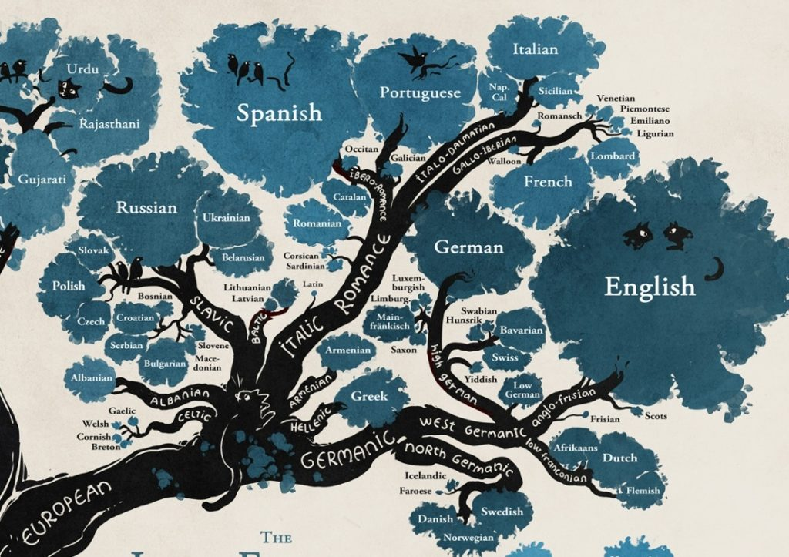
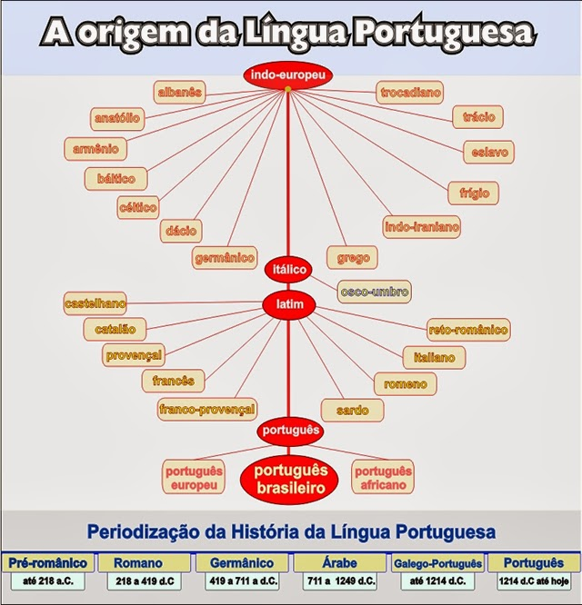

<!DOCTYPE html>
<html lang="en">
<head>
    <meta charset="UTF-8">
    <meta name="viewport" content="width=device-width, initial-scale=1.0">
    <script src="https://cdn.jsdelivr.net/npm/marked/marked.min.js"></script>
    <title>Língua</title>
</head>
<body>
    <div id="content"></div>
<script>
    const markdownText = `# BASE TEÓRICA - PESQUISA

A língua portuguesa tem suas raízes no latim vulgar, o latim falado pelo povo romano e levado à Península Ibérica a partir do século III a.C., quando o Império Romano consolidou o domínio sobre aquelas terras. Esse latim, diferente do latim clássico dos escritores, era a língua cotidiana, permeada de simplificações gramaticais e expressões populares. Com o passar dos séculos e com a queda do Império, esse latim vulgar se transformou em vários dialetos locais, que dariam origem às línguas românicas, entre elas o galego-português, surgido no noroeste da Península, região que hoje corresponde à Galícia e ao norte de Portugal.

O galego-português floresceu entre os séculos XII e XIV, sobretudo como língua literária, sendo a base tanto do português quanto do galego moderno. Aos poucos, porém, o Reino de Portugal, consolidado politicamente, passou a diferenciar-se cultural e linguisticamente de seus vizinhos, fazendo do português uma língua própria, usada não só na poesia, mas também em documentos oficiais e no cotidiano do Estado. Assim, quando os navegadores portugueses se lançaram ao Atlântico e ao além-mar, já levavam consigo uma língua consolidada e pronta para se expandir.

No Brasil, o português desembarcou oficialmente em 1500, com a chegada de Pedro Álvares Cabral. A princípio, no entanto, o idioma europeu não foi o único nem o mais difundido. Os colonos portugueses conviviam com uma multiplicidade de línguas indígenas, principalmente as do tronco tupi, que eram faladas por milhões de nativos e logo se tornaram um meio de comunicação entre colonizadores e colonizados. Surgiu então a chamada língua geral, baseada no tupi, usada não só por indígenas, mas também por jesuítas e colonos para a catequese e o convívio. Durante mais de dois séculos, o português conviveu e se misturou com esse idioma, recebendo dele centenas de palavras que ainda hoje fazem parte do vocabulário cotidiano, como "pipoca", "abacaxi" e "jacaré".

A virada decisiva ocorreu no século XVIII, quando a Coroa portuguesa, temendo perder influência sobre sua colônia, decretou que a língua portuguesa deveria ser a única oficial, proibindo o uso da língua geral. Esse esforço coincidiu com a intensificação da colonização, a chegada de levas maiores de colonos portugueses e a difusão de instituições coloniais. Com isso, o português se firmou como língua dominante no Brasil. Ainda assim, ele não se manteve idêntico ao de Portugal. O contato intenso com as línguas indígenas, com as línguas africanas trazidas pelos povos escravizados e com a própria realidade cultural da terra gerou uma versão brasileira do português, com diferenças fonéticas, sintáticas e lexicais em relação ao europeu.

Assim, o português do Brasil nasceu não apenas como herança da metrópole, mas como resultado de um processo histórico de encontros e conflitos culturais. Do latim vulgar romano até as variações contemporâneas, a língua atravessou impérios, mares e séculos, transformando-se em veículo de identidade para milhões de falantes. Hoje, embora unida por uma base comum, a língua portuguesa carrega no Brasil uma vitalidade própria, marcada pela diversidade de povos que a moldaram e pelo território vasto em que floresceu.


# ADAPTAÇÃO PARA O CONTEXTO DO TRABALHO


# PAINEL
(Mesma base de todos os outros painé4is, cabeçalho -> título + subtítulo; corpo -> seções com título, período, resumo, trecho de documento histórico e imagem quando disponíveis). Os trechos de documentos históricos devem servir inclusive para demonstrar a evolução da língua com o passar do tempo.

## 1 - Latim vulgar
Período: séc. III a.C. - V d.C. (introdução romana)
Trecho: 
Resumo: O latim vulgar - a forma popular do latim falada por soldados, colonos e plebe - foi levado à Península Ibérica com a conquista romana. Com o declínio do Império, esse latim cotidiano fragmentou-se em dialectos regionais que viriam a formar as línguas românicas, estabelecendo a base linguística do futuro galego-português.
Imagem:


## 2 - Galego-português
Período: séc. IX-XIV (florescimento literário nos séc. XII-XIV)
Trecho: 
Resumo: No noroeste peninsular consolidou-se o galego-português, estágio medieval que serviu de matriz literária e administrativa. Entre os séculos XII e XIV atingiu prestígio literário e institucional; dele derivaram o galego (na Galícia) e o português, que mais tarde seguiria caminhos distintos devido a mudanças políticas e culturais.
Imagem:


## 3 - Consolidação política e linguística de Portugal
Período: séc. XII (consolidação do Reino)
Trecho: 
Resumo: Com a formação do Reino de Portugal, a língua local começou a ganhar funções administrativas e oficiais. A consolidação política e a criação de instituições estatais favoreceram o uso do português em documentos, na administração e na vida pública, fortalecendo sua diferença face às línguas vizinhas e preparando-o para projeções futuras.
Imagem:


## 4 - Grandes Navegações e expansão do idioma
Período: séc. XV (expansão atlântica)
Trecho: 
Resumo: A partir do século XV, as navegações portuguesas levaram o idioma além da Península. Portos, rotas e colônias serviram de vetores para a circulação do português, que se difundiu pelo Atlântico e o Índico, tornando-se língua de administração, comércio e religiosidade nas novas possessões ultramarinas.
Imagem:


## 5 - Chegada ao Brasil (1500)
Período: 1500
Trecho: 
Resumo: Pedro Álvares Cabral e sua frota aportaram no litoral brasileiro, iniciando a presença portuguesa na América. A chegada abriu o processo de soberania e exploração costeira, mas não significou substituição imediata de outras línguas - o português conviveu com e aprendeu das línguas indígenas desde os primeiros contatos.
Imagem: 

## 6 - Língua Geral (Tupi) como meio de contato
(questionável => não tenho certeza desse tópico. Eu li em algum lugar que a língua geral na verdade é um mito bonitinho, mais do que algo real, e que a língua mais falada era mesmo o português com incorporações de palavras estrangeiras. pesquisar depois. ah, melhor, parece uma simplificação didática! deveria ser muito mais complexo do que isso. vou pedir para o Enzo rever isso novamente.)
Período: sécs. XVI-XVII
Trecho: 
Resumo: No Brasil colonial o tronco tupi deu origem à chamada Língua Geral, usada extensamente por indígenas, jesuítas e colonos como língua franca. Esse contato prolongado introduziu centenas de léxicos tupi no português, deixando marcas profundas no vocabulário cotidiano brasileiro (ex.: pipoca, abacaxi, jacaré).
Imagem:


## 7 - Política linguística da Coroa (hegemonia do português)
(novamente questionável. pegar fontes de outros espectros ideológicos. evitar sociol.? "O português colonial brasileiro: uma nova agenda de pesquisas entre o português clássico e o português brasileiro moderno" parece um bom ponto de partida)
Período: séc. XVIII
Trecho: 
Resumo: No século XVIII a Coroa intensificou medidas para consolidar o português como língua oficial do Império colonial, restringindo o uso da Língua Geral. A política coincidiu com maior colonização europeia e difusão institucional, acelerando a hegemonia linguística portuguesa no território e reduzindo formalmente o papel das línguas indígenas na administração.
Imagem:


## 8 - Formação do português brasileiro
Período: sécs. XVIII-XIX (processo formador)
Trecho: 
Resumo: O português do Brasil consolidou-se como variante própria por meio de encontros com línguas indígenas e africanas e das condições sociais coloniais. Resultou em diferenças fonéticas, sintáticas e lexicais em relação ao português europeu, refletindo um processo histórico de contato, adaptação e invenção cultural ao longo de séculos.
Imagem:


# Árvore geneal[ogica] do Português

^
|- Parece boa para usar

^
|- precisa ser refeita


# DIFFS - ideia
conceito interessante. lá vamos nós... Isso é aplicado majoritariamente para sistemas de controle de versão (como Git). No nosso caso, cada "versão" é um estágio descrito da língua portuguesa. Diffs, no contexto de sistemas de controle de versão como o Git, são artefatos que exibem as diferenças entre dois estados de um repositório - por exemplo, entre o diretório de trabalho e o último commit, entre dois commits distintos ou entre duas ramificações. Eles mostram linha a linha o que foi adicionado, removido ou modificado, usando um formato padronizado. (argh, commit é termo técnico. trocar)
Genericamente, uma diff é uma descrição de como transformar um conjunto de dados de um estado A para um estado B. Essa descrição é conhecida como patch. Nesse caso, padronizaríamos gramática, ortografia e pronúncia e pegaríamos mudanças que ocorreram na escrita de plavras, nas estruturas gramaticais ou nos sons ao longo do tempo. Colocaríamos apenas 1 ou 2 exemplos que diferem entre cada commit.
tbm passar isso para o Enzo`;
document.getElementById("content").innerHTML = marked.parse(markdownText);
</script>
</body>
</html>